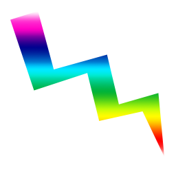

주소
_self 현재 페이지에서 이동
_parent 부모프레임이 있으면 부모 페이지가 이동
_top 최상위 페이지 이동
-blank 새탭으로 페이지 열림
사용자의 몫이기 때문에 권고사항 아님
1. a 요소는 두가지역할 // 링크로써의 기능 , 링크의 타겟이 되는 기능
2. 링크로서의 기능일때는 href속성 , 내부 페이지 연결은 href값으로
해당 #id가 와야하며 외부페이지 연결은 값으로 주소가 와야한다
3. 링크의 타겟으로써 기능을 가질 때는 name 속성을 가지고 있다.
현재는 name보다 id 속성으로 사용권장
4. id 속성은 모든 요소가 가질수 있는 속성, 때문에 굳이 타겟을 위해 a요소를 사용할 필요없다
5. a요소안의 텍스트는 접근성을 위해 해당 링크페이지를 알수있도록 한다.
6. target 속성을 새창열기등 해당링크가 열리는 동작을 제어 가능
jpg 압축률이 좋다
gif 배경투명 움직이는 이미지, 256 color
png 배경투명 24bit, 8bit 모두 사용 가능
svg

1. img에는 비트맵과 벡터가 있다
2. 비트맵은 확대하면 깨지나 다양한 색상을 표현가능하여 사진등에 주로사용
벡터는 아무리 확대해도 깨지지 않으나 색상을 표현하는데 한계가 있다
3. 인터넷에서 쓸수있는 비트맵 확장자는 gif, jpg, png 이며 벡터는 svg이다
4. img 요소는 스스로 닫는 태그형태의 인라인요소이다
5. alt 속성은 이미지를 대체하는 대체텍스트를 넣어야 하는 필수 요소이다
6. alt 속성에 alt가 선언되지 않으면 비표준이다
7. alt 속성에 입력된 텍스트는 검색엔진과 스크린리더등에서 활용
8. 이미지에 아무런 내용이 담겨있지 않은경우에도 alt는 선언하되 #또는 빈값으로 한다
9. title은 툴팁 성명을 넣을수 있으며 필수는 아님
10. width, height는 이미지의 기본크기를 명시하는 속성 stylesheet로 대체가능
clip-path : 이미지 요소의 클리핑 범위를 지정
- 숫자항목1
- 숫자항목2
- 정의
- 용어 설명
- 정의1
- 용어 설명1
- 준비물
-
- 조리법
-
- 물을 끓인다
- 스프
- 파계란
- 먹는다